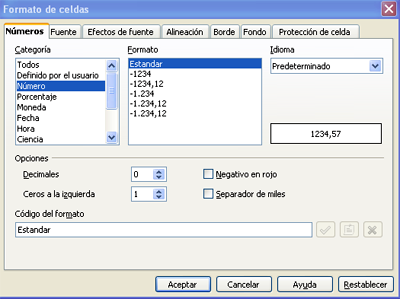
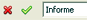
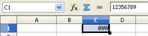
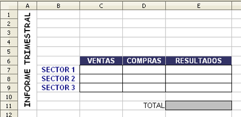

Hojas de cálculo
3.1. Formato de celdas
Has empezado a trabajar ya con las celdas, lo cual es muy importante para manejar una hoja de cálculo. En este apartado aprenderás a modificar su aspecto y su contenido trabajando con el menú "Formato de celdas".
En primer lugar aparece la pestaña "Números" donde podemos elegir el formato de la celda (número, porcentaje, moneda, fecha, hora,...) y en cada tipo se pueden elegir diferentes opciones.

- Las pestañas "Fuente" y "Efectos de fuente" podemos modificar aspectos como el tipo, el estilo, el color y el tamaño de la fuente, o el idioma.
- La pestaña "Alineación" permite establecer la alineación y la orientación del texto en la celda.
- Las pestañas "Borde" y "Fondo" tienen opciones para modificar el tipo de línea, la distancia con el texto, el sombreado y el color de fondo de la celda.
- La pestaña "Protección de celda" permite proteger datos y ocultarlos para la impresión.
Para manejar estos formatos es necesario tener en cuenta los siguientes aspectos:
- Los textos se alinean por defecto a la izquierda de la celda.
- Los formatos que incluyen valores numéricos (fecha, hora, moneda, ...) se alinean por defecto a la derecha de la celda.
- Los valores numéricos no pueden contener caracteres alfanuméricos, excepto los signos + y -. En caso de aparecer algún otro carácter junto a un valor numérico el programa los considera como texto.
- Mientras se escribe un dato, se visualiza a la vez en la celda y en la barra de herramientas, y se puede aceptar o cancelar la introducción del dato con las pestañas siguientes: 
- Si al introducir un dato, se produce un error, no se deben utilizar los cursores de flechas, si no la tecla de retroceso.
- Si se introduce un dato de mayor tamaño que la celda, se visualiza en la celda estos símbolos ###, aunque el dato queda almacenado correctamente.

Ejercicio Resuelto
Para aprender un programa hay que manejarlo. Te proponemos un ejercicio sencillo para que te familiarices con las opciones que presenta este menú.
Realiza la siguiente pantalla en OOo tal y como aparece en la imagen. ¡Ah!, y no olvides guardarlo, en el próximo punto trabajarás en el mismo archivo.

Obra publicada con Licencia Creative Commons Reconocimiento No comercial Compartir igual 4.0